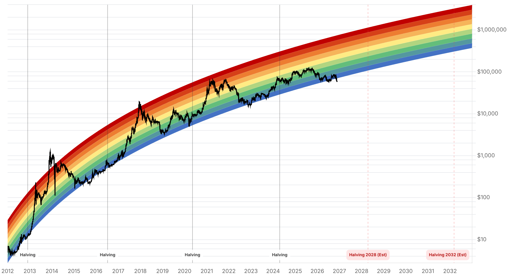

Reporte financiero
BTC cotiza en vivo a USD 61.439,06 (07:18 UTC), +0,45% frente al cierre previo de USD 61.162,20 -y +4,05% frente al precio en vivo de ayer (USD 59.047,73)-, extendiendo a un tercer día el rebote desde el mínimo de varios meses de USD 57.778,35 del viernes 20 de noviembre. Dos fuentes de prensa independientes (Motley Fool, 22-nov 17:20 ET, y Analytics Insight, 23-nov 06:05 UTC) confirman de forma cruzada el mismo nivel -sobre USD 60.700-60.800-, lo que da respaldo adicional a la lectura del precio en vivo más allá de la fuente única de Yahoo Finance. La novedad de hoy es que el Fear & Greed Index rompe su racha de mínimos marginales sucesivos y se mantiene plano en 11 ('Extreme Fear'), sin deteriorarse más pese al rebote de precio, pero tampoco mejorar. En el frente institucional surgió un dato nuevo pero no confirmado por la fuente principal: trackers secundarios (no Farside/tftc.io, que sigue sin publicar nada posterior al 19 de noviembre) estiman entre USD 124M y 669M en salidas netas de ETFs de bitcoin para el viernes 20 de noviembre -lo que describen como una cuarta jornada consecutiva de redenciones-, una cifra que conviene tratar con cautela por el rango tan amplio y la falta de coincidencia con la fuente que este reporte usa como referencia. La prueba de Wall Street señalada ayer como clave para el lunes sigue pendiente de resolverse: al momento de esta edición (07:18 UTC, cerca de las 2:18 am hora de Nueva York) el mercado bursátil estadounidense todavía no ha abierto, por lo que la reacción institucional real de hoy aún no puede evaluarse. No se encontraron novedades verificables sobre la exclusión de Strategy (MSTR) de los índices MSCI (sigue efectiva al cierre del 30 de noviembre, sin cambios), la postura de Mark Yusko (su comentario más reciente ubicable sigue siendo del 18 de noviembre, sin matices nuevos), la condición de Waller sobre la Fed, la Clarity Act, BTCPay Server, la apelación del Reino Unido sobre los 61.000 BTC, Cantor Fitzgerald, ni el reclamo no verificado sobre Irán.
Tras el mínimo de varios meses de USD 57.778,35 el viernes 20 de noviembre, bitcoin encadena ahora tres días de recuperación: sábado (cierre USD 60.094,09), domingo (cierre USD 61.161,91, revisado al alza frente a la cotización en vivo de ayer de USD 59.047,73 que se tomó a media tarde del domingo) y hoy lunes, con la cotización en vivo en USD 61.439,06 (+0,45% frente al cierre previo) a las 07:18 UTC. Dos artículos de prensa fechados de forma independiente -Motley Fool (22-nov, 17:20 hora del Este) y Analytics Insight (23-nov, 06:05 UTC)- reportan niveles de USD 60.785 y USD 60.664 respectivamente para sus propios momentos de corte, ambos por encima de USD 60.000 y en la misma dirección que el precio en vivo de Yahoo Finance usado en este reporte -una confirmación cruzada útil dado que ninguna de esas fuentes es la que se usa para el precio oficial del reporte-.
Después de bajar de forma marginal varios días seguidos (incluyendo el paso de 12 a 11 reportado ayer), el índice de alternative.me se mantiene hoy exactamente en 11, sin deteriorarse más. La clasificación sigue siendo 'Extreme Fear'. Que el indicador no mejore pese a tres días de rebote de precio sugiere que el mercado sigue sin convencerse de que se trate de un cambio de tendencia -pero que tampoco empeore es, en sí, una pausa en el deterioro que no se había visto desde antes del mínimo del viernes.
A diferencia de lo reportado ayer (sin ningún dato para el 20 o 21 de noviembre), hoy aparecieron estimaciones de prensa secundaria para el viernes 20 de noviembre -día bursátil, a diferencia del fin de semana-: entre USD 124M y 669M en salidas netas de ETFs de bitcoin en EE.UU., según el tracker, lo que describen como la cuarta jornada consecutiva de redenciones (sin precisar un líder claro, mencionando a Fidelity (FBTC) y Grayscale (GBTC) como contribuyentes). Es importante notar que la fuente que este reporte usa como referencia principal (Farside Investors, vía tftc.io) revisada hoy sigue sin mostrar ningún dato posterior al 19 de noviembre (-USD 582,2M) -por lo que esta cifra del viernes debe tratarse como no confirmada y con un rango de incertidumbre inusualmente amplio, no como un dato duro equivalente al de días anteriores.
El reporte de ayer señaló la reapertura de Wall Street de hoy lunes como la primera oportunidad real de confirmar si el nivel de USD 59.000-61.000 se sostiene con participación institucional. Esta edición se genera a las 07:18 UTC (cerca de las 2:18 am hora de Nueva York), antes de la apertura de Nasdaq y S&P 500 (9:30 am hora del Este) -por lo que esa prueba todavía no se ha resuelto y debe seguir monitoreándose durante el día de hoy, no darse por confirmada ni refutada en esta edición.
La exclusión de Strategy (MSTR) de los índices MSCI sigue efectiva al cierre del 30 de noviembre, sin novedad adicional. El comentario más reciente ubicable de Mark Yusko sigue siendo del 18 de noviembre (mismo encuadre: liquidación forzada multi-activo, ciclo en su 'primavera', USD 58.000 como nivel clave), sin matices nuevos hoy. No se encontraron fuentes fechadas para hoy que actualicen la condición de Waller sobre la Fed, la probabilidad de alza de diciembre, la Clarity Act, BTCPay Server, la apelación del Reino Unido sobre los 61.000 BTC, Cantor Fitzgerald, ni el reclamo no verificado sobre Irán -se repite brevemente para que quede constancia de que se revisó, no porque haya cambiado.
| Periodo | Valor |
|---|---|
| 17 nov | 64893.95 |
| 18 nov | 62987.27 |
| 19 nov | 61901.82 |
| 20 nov | 58798.98 |
| 21 nov | 60094.09 |
| 22 nov | 61161.91 |
| 23 nov (en vivo) | 61439.06 |
| Periodo | Valor |
|---|---|
| Hoy | 11 |

“We are in a bad liquidation cycle right now.”
“If the Fed moves by a quarter point in December, officials should signal another hike is likely in January.”
BTC encadena tres días de rebote desde el mínimo de varios meses del viernes (USD 57.778,35), superando ya USD 61.400 en vivo esta mañana, con confirmación cruzada de dos fuentes de prensa independientes. Pero la prueba real -la reapertura de Wall Street de hoy lunes- todavía no ocurrió al momento de esta edición (mercado bursátil de EE.UU. cerrado, pre-apertura). El Fear & Greed Index deja de empeorar (plano en 11) pero tampoco mejora, señal de escepticismo persistente del mercado hacia el rebote.
Estimaciones no oficiales de una cuarta jornada consecutiva de salidas de ETFs el viernes 20-nov (USD 124M-669M, rango amplio y sin confirmar por la fuente de referencia de este reporte) introducen una nota de cautela sobre el rebote de precio: si se confirmara un patrón de salidas sostenidas pese a la recuperación del precio, sería una divergencia relevante a vigilar. La condición de Waller sobre señalar una alza adicional en enero si se opta por 25pb en diciembre sigue vigente, sin cambios desde ediciones anteriores.
Sin cambios en los objetivos de precio de largo plazo ya reportados en ediciones anteriores (Citigroup, Bernstein, Standard Chartered, Tom Lee, NYDIG, Armstrong, piso de costo de producción de JPMorgan en USD 94.000). La lectura de Mark Yusko -ciclo en su 'primavera' pese al dolor de corto plazo, sin matices nuevos desde el 18 de noviembre- sigue siendo la visión constructiva más reciente disponible.
Esta edición se publica antes de la apertura bursátil de EE.UU., por lo que la prueba institucional señalada ayer sigue sin resolverse. Además, la fuente de referencia de ETFs (Farside/tftc.io) todavía no publica el dato del viernes 20-nov que trackers secundarios ya estiman (con amplio rango de incertidumbre) en entre USD 124M y 669M de salidas.
El rebote de precio es real y confirmado por múltiples fuentes, pero el Fear & Greed Index se mantiene en 'Extreme Fear' y las estimaciones no oficiales de ETFs apuntan a una cuarta jornada de salidas, no de entradas. La cautela de ediciones anteriores sigue vigente hasta ver datos duros de la sesión de hoy.
Sin cambios desde ediciones anteriores: Waller condicionó su apoyo a un movimiento de 25pb en diciembre a que se señale explícitamente otra alza en enero. Sigue siendo el catalizador macro dominante de mediano plazo, sin novedad hoy.